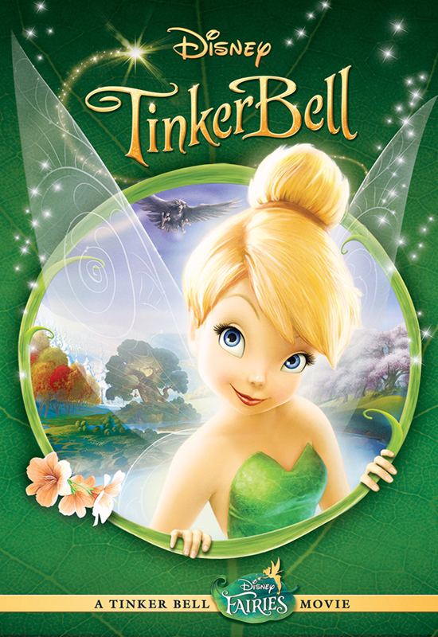
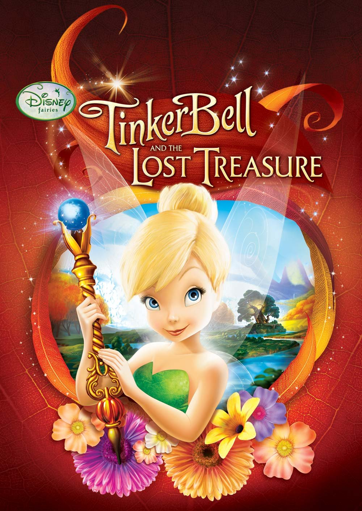
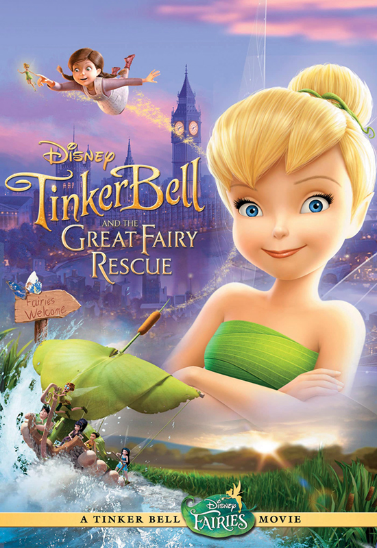
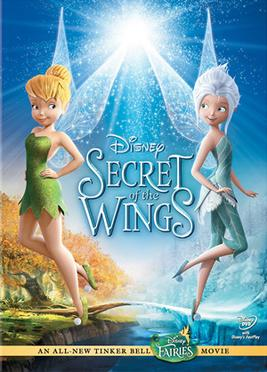
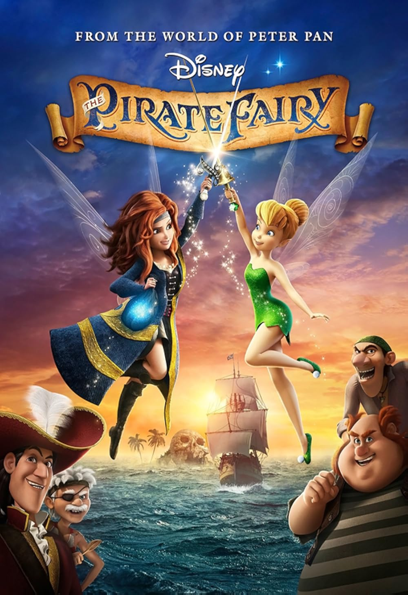
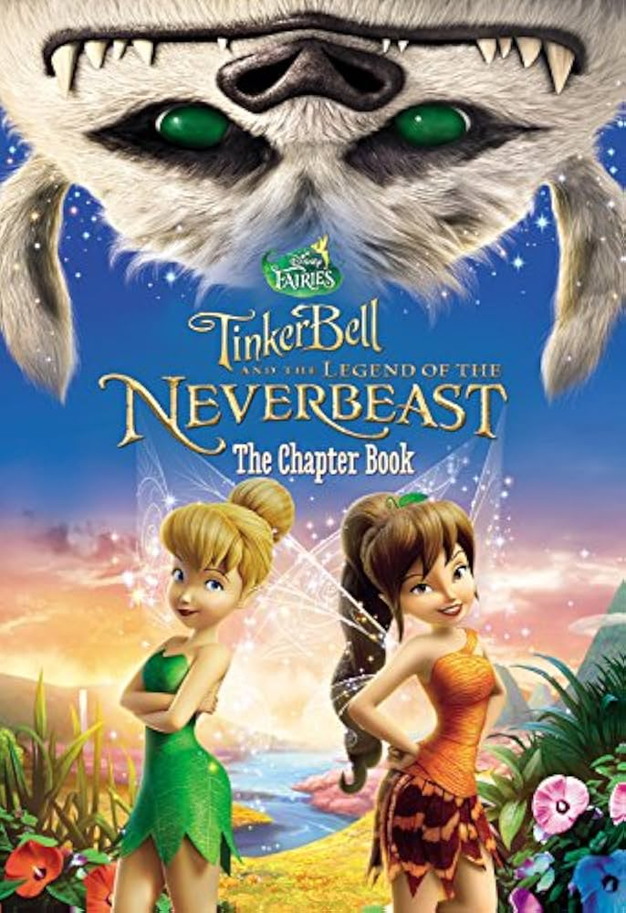

A personagem Tinker Bell (Sininho) apareceu pela primeira vez no clássico da Disney Peter Pan (1953). Por décadas, ela foi tratada como uma figura secundária — a fadinha ciumenta, brilhante e quase sem fala. No entanto, a Disney percebeu que ela era extremamente popular entre o público feminino e versátil como símbolo da magia da Disney. Na década de 2000, com o sucesso de produtos voltados para meninas (como as Disney Princesses), surgiu a ideia de expandir o universo das fadas. Assim nasceu a linha Disney Fairies, e com ela, o desejo de dar à Tinker Bell uma identidade própria.
1. Tinker Bell: Uma Aventura no Mundo das Fadas (2008) • Mostra a origem da Tinker Bell e sua chegada ao Refúgio das Fadas.
2. Tinker Bell e o Tesouro Perdido (2009) • Tinker Bell embarca em uma missão para restaurar a Pedra da Lua.
3. Tinker Bell e o Resgate da Fada (2010) • Tink faz amizade com uma menina humana enquanto as outras fadas tentam resgatá-la.
4. Tinker Bell: O Segredo das Fadas (2012) • Tinker Bell descobre que tem uma irmã gêmea, Periwinkle, no Bosque do Inverno.
5. Tinker Bell: Fadas e Piratas (2014) • Uma fada rebelde se junta a piratas, e Tinker Bell precisa impedi-la de causar um desastre.
6. Tinker Bell e o Monstro da Terra do Nunca (2015) • Fawn conhece uma misteriosa criatura que pode ser uma ameaça ou um herói.